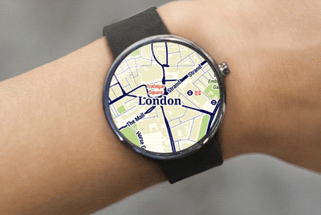

Silica Labs Software Corp, our Washington, D.C. based startup is recognized as a global leader in software development, particularly for mobile and wearable software. Together since April 2013, we have created software for some of the most innovative companies in the world, including Mapbox, SingTel, Social Radar, Surescripts. We also created a proprietary platform used by media brands, including National Geographic, and the Atlantic, to distribute their content through mobile and wearable devices. These companies are very different, ranging from a social-location startup to a 100 year- old nonprofit, a billion-dollar software company to a telecommunications giant larger than AT&T. Moreover, each software application met different technical and business objectives.
Automattic is almost synonymous with its flagship product, WordPress.com. WordPress.com powers 33 million blogs and the news sites of organizations such as CNN and Time. Collectively, the network is the seventh most popular site on the Internet.A few months after Google Glass was made available to 2,000 “Explorers,” Tumblr, Twitter, and Facebook released sharing-apps for Google Glass.Since there was no app for WordPress.com, we created one and tested it in Iceland. That blog created using this application was featured on WordPress’s front page, Freshly Pressed and resulted in a profile in Pando Daily.
Paul Sieminski, General Counsel of Automattic: “We have a great community of developers creating amazing WordPress plugins. But the folks at Silica Labs not only created new technical functionality, they also used it to share a personal story about a trip through the glaciers and geothermal swamps of Iceland. It caught our attention, considering our company’s mission of democratizing publishing.”Bill Marr, chief creative officer for the magazine: Silica Labs’ work “makes the publishing process extremely easy.”
The Marina Bay Sands Hotel is an luxury resort facing the Marina Bay in Singapore. Developed by Las Vegas Sands, it is billed as the world's most expensive standalone casino property at $8 billion, including cost of the prime land. This application would enable Google Glass Explorers to take a tour uncovering Singapore’s most notable landmarks and record/share their breathtaking rooftop experience through photos and video. We prototyped the app to include a minute long tour where visitors can find audiovisual content of selected landmarks of Singapore, as well as take photo and video of their tour. The Glassware is location-aware and offered content based on the user location within the observation deck.
HungryGoWhere is a food and restaurant review website used in countries like Singapore, Malaysia, Hong Kong, Vietnam, Cambodia and Australia. The app is used to gather information on food establishments and a portal where these businesses can grow their online profile. HungryGoWhere was developed in 2004 and was acquired in 2012 by Singapore Telecommunications Limited. SingTel reached out to us to build an interactive experience with HungryGoWhere through Google Glass. For this project, we:
Winson Wong, Innovation and Partnerships at SingTel LifeLabs, San Francisco: “Silica Labs has been extremely professional, creative, and responsive to us to date. Throughout the initial conceptual and design phases of work, they have been focused on creating a great user experience with plenty of new ideas and original ways to delight the end users.”

Michael Chasen: “We scoured the East Coast looking for the best Google Glass development team we could get. The team at Silica Labs was totally ahead of the game and clearly the team to pick. They did great work for us, were responsive and professional, and just a pleasure to work with.”
Surescripts is the nation’s largest e-prescription network, connecting prescribers in all 50 states through their choice of software to payers, chain pharmacies, and independent pharmacies.We designed and built a custom application as part of Surescript’s promotional and marketing efforts aimed at Congressmen and their staff at an all- day event on Capitol Hill. The Glass application helped Surescripts stick out from the crowd and portray their brand as innovative and forward- thinking to the legislators they often work with.
David Yakimischak, General Manager of Medication Network Services, Surescripts: Silica Labs “were really professionals and helped us achieve our goals.”